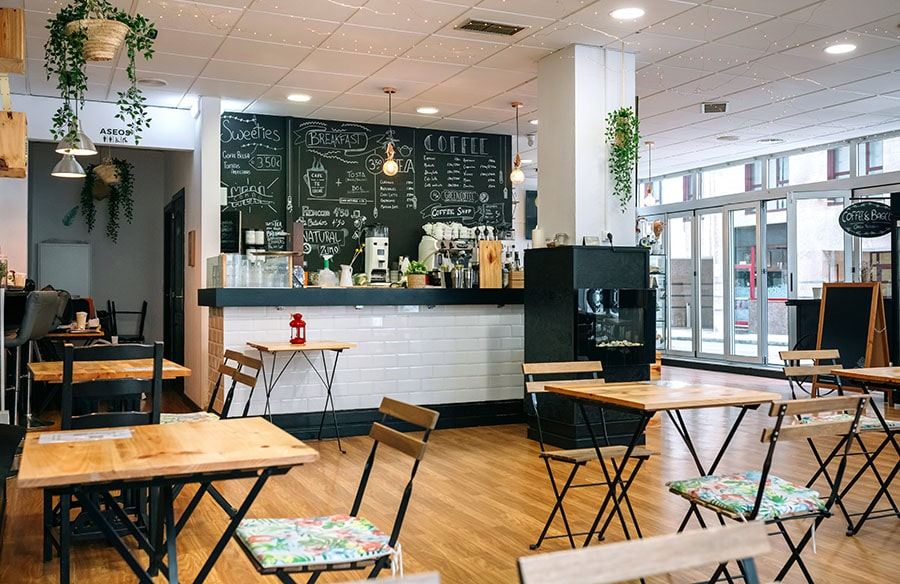

En Cafetería "Coffe Amore", cada detalle importa. Nos esforzamos en utilizar ingredientes de la más alta calidad y en crear un ambiente único y acogedor para nuestros clientes.
Ofrecemos una gran variedad de productos que van desde el café más fino hasta postres artesanales elaborados por expertos. Nuestro objetivo es que cada visita sea una experiencia inolvidable.
Además, estamos comprometidos con prácticas sostenibles y con el apoyo a pequeños productores locales para fomentar el comercio justo.
Volver al Inicio